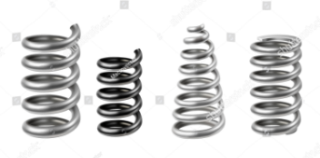
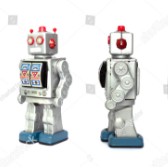
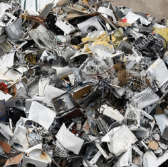

მინიშნება
 ლითონი
ლითონი

 ჩვენს პლანეტაზე ლითონის დიდი მარაგია.
ჩვენს პლანეტაზე ლითონის დიდი მარაგია. ლითონს ვერცხლიფერი ან მოყავისფრო ფერი აქვს, სინათლეზე ბზინავს, არის მაგარი და ატარებს დენს.
არსებობს როგორც მძიმე, ისე მსუბუქი მეტალი.


 ლითონი ნაგვის დიდ რაოდენობას ქმნის. თუმცა, მათი გადამუშავება შესაძლებელია.
ლითონი ნაგვის დიდ რაოდენობას ქმნის. თუმცა, მათი გადამუშავება შესაძლებელია. არსებობს მომწამვლელი და საშიში „ფერადი“ ლითონები.